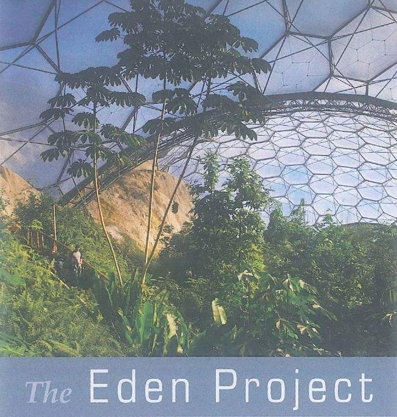
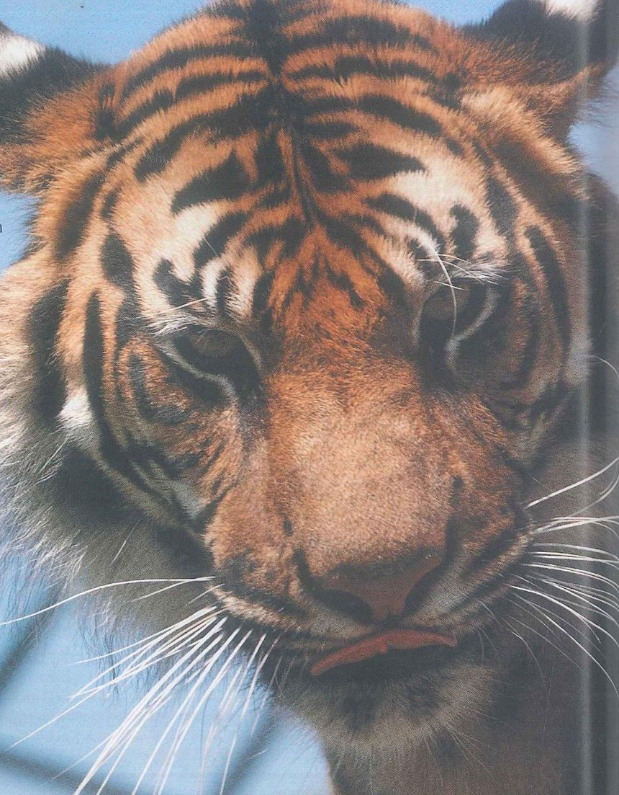
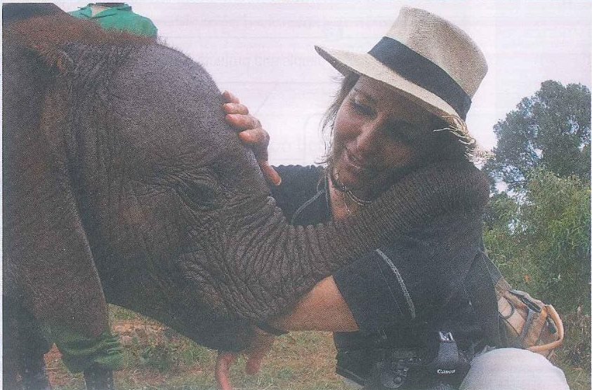
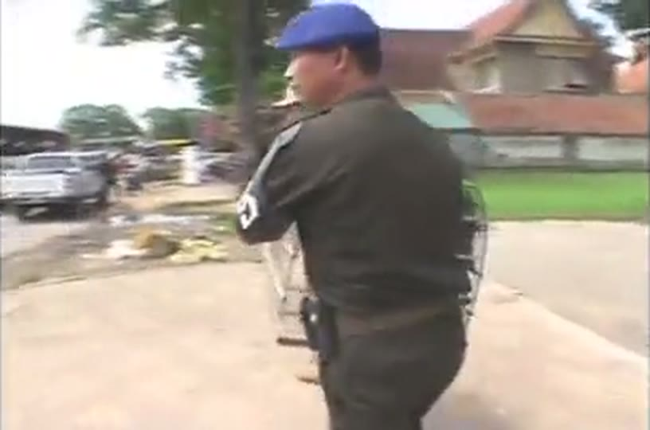
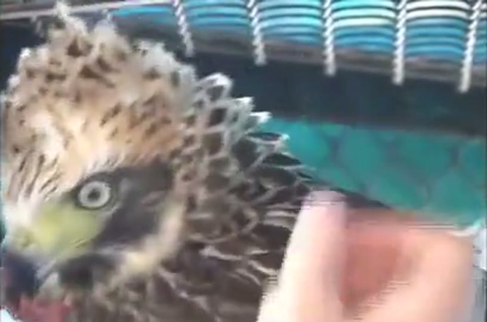
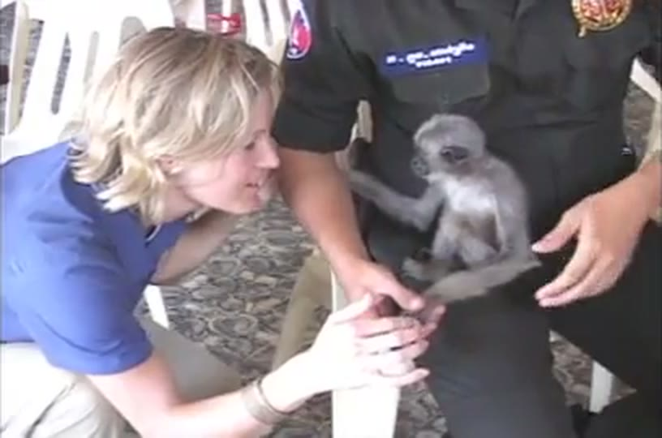
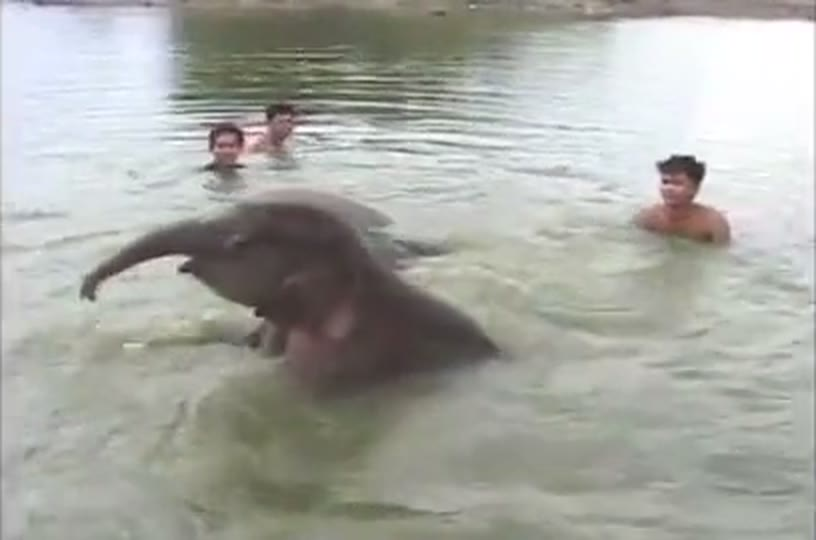
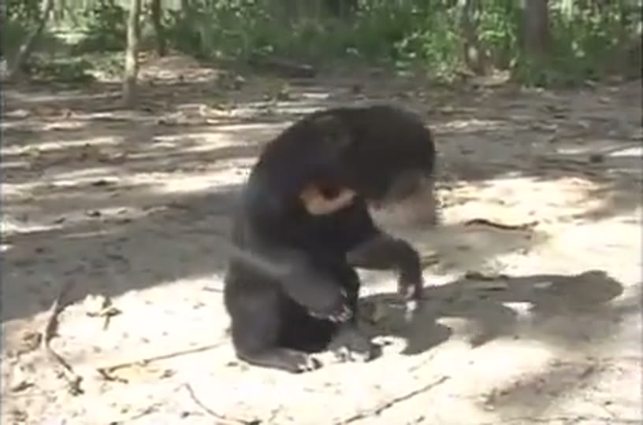

Aims of the lesson & Lead-in
Aims of the lesson
By the end of the four periods, you can:
- Recall the chunks of the 4 groups: places worth visiting, planning and writing an article, poaching and endangered animals, rescue, care and release.
- Explain how an article is organised: a title, an introduction, two body paragraphs that each open with a topic sentence, and a conclusion.
- State the key facts about the Eden Project and the Phnom Tamao Rescue Centre: where they are, what they do and who they help.
- Recognise passive verbs such as is brought in · was saved · will be released and the word order of research questions.
- Use the passive to describe a place or an animal’s story when the doer is unknown or does not matter.
- Ask research questions (What · When · Who · Why · How many …?), including subject questions, and sort the answers on a mind map.
- Pick out facts, reasons and the writer’s purpose in The Eden Project and the three PET Reading texts.
- Follow the video about animal rescue in Cambodia and the PET Listening extras, and answer the questions accurately.
- Plan and write a 120–140-word article about a place, from research questions to a mind map to four paragraphs, frame by frame.
- Describe and evaluate, with the 7-step frame, a nature documentary you have watched (card A) or a wild animal you once saw in real life (card B).
- Value conservation work around the world, show care for wildlife and the fight against poaching, and plan your written and spoken work responsibly and creatively.
Lead-in 1 · A giant greenhouse and animals in need: look, guess and react

- Question 1‘What do you think the roof is made of, and why can you see the sky through it?’
- Question 2‘Find the tiny person on the path. How tall would you say the trees are?’
- Question 3‘Would you rather visit a huge dome like this or a real national park? Why?’
Model answer
It looks like hundreds of plastic bubbles held together by a metal frame, and the sunlight gets through so the plants can grow. Next to that person, the tallest trees must be fifteen metres high, maybe more. On a rainy day I’d choose the dome, but any other time I’d take a real park, because I like not knowing what’s round the next corner.

- Question 1‘Look at its eyes and its mouth. Does this tiger seem calm, tired or angry?’
- Question 2‘This tiger now lives at a rescue centre in Cambodia. How might its life have gone wrong in the wild?’
- Question 3‘Why do you think some people hunt tigers even though it is against the law?’
Model answer
Its eyes are half shut and its tongue is just poking out, so to me it looks relaxed, almost sleepy. My guess is that hunters caught it as a cub, or somebody kept it in a small cage until it got too big. People hunt them for money, I think, because there are buyers who still want their skins and other body parts.

- Question 1‘Who could this woman be: a tourist, a keeper or a vet? Which clues tell you?’
- Question 2‘Look at the elephant’s trunk. How does the animal feel about her?’
- Question 3‘Would you like to spend a year working with animals like this? What would be the hardest part?’
Model answer
The camera and the sun hat make me think photographer, but she holds that head like someone who’s known the elephant for months. Its trunk is wrapped round her shoulder, which is basically a hug back. I’d jump at a year like that, though getting up at five every morning to feed a hungry baby elephant would test me.

- Question 1‘Describe his uniform. What else is he carrying?’
- Question 2‘He belongs to a team that takes animals away from poachers. What might be inside the wire cage, and where is he taking it?’
- Question 3‘Would you like a job protecting wild animals? Which part of it would scare you?’
Model answer
He’s wearing a dark uniform and a blue beret, and there’s a gun on his belt, so he could be police or a forest ranger. I reckon the cage holds a bird or a small monkey his team has just taken from a poacher, and he’s heading to the truck to drive it somewhere safe. I’d love the job in the daytime, but meeting poachers in a forest at night is the part that would keep me awake.

- Question 1‘What kind of bird is this? Describe its eyes, its beak and its feathers.’
- Question 2‘A hand is very close to its face. What is the person trying to do, do you think?’
- Question 3‘Why might a wild bird like this need help before it can fly free again?’
Model answer
It’s an eagle, with pale, staring eyes and a crown of brown and white feathers that stick straight up. It looks as if the hand is offering it a piece of meat, and the bird doesn’t seem very grateful! If it spent months in a cage, it may have forgotten how to hunt, so someone has to feed it until it’s strong enough to look after itself.

- Question 1‘How big is this little animal compared with the hands around it?’
- Question 2‘Where do you think it lived before the rescue centre: in a forest, in a zoo or with a family?’
- Question 3‘If you saw a baby animal like this for sale at a market, what would you do?’
Model answer
It’s tiny, hardly longer than the man’s hand, with soft grey fur and very long, thin arms. It isn’t scared of the woman at all, so I’d guess it grew up around people, maybe in a shop or someone’s house. I wouldn’t buy it, because that just puts money in the seller’s pocket; I’d take a photo and report it to the forest rangers.

- Question 1‘Who is in the water with the elephant, and what are they all doing?’
- Question 2‘Why do you think the keepers get into the water with it?’
- Question 3‘Is this a good life for an elephant, or should it go back to the forest? Give one reason.’
Model answer
Three young men are swimming round a baby elephant, and it’s holding its trunk up out of the water like a snorkel. Elephants love water, and swimming together is probably how the keepers win its trust and check that it’s healthy. It looks happy enough here, but if it can learn to live on its own, I’d rather see it back in the forest with a herd.

- Question 1‘What animal is this? Describe its fur and the pale mark on its chest.’
- Question 2‘Some people buy bear cubs as pets. What problems might they have when the cub grows up?’
- Question 3‘Where would this bear be happier: in a forest or at a rescue centre? Why?’
Model answer
It’s a black bear with short, shiny fur and a creamy patch on its chest. A cub might seem sweet in the house, but in a year it’s strong enough to scratch or bite without meaning any harm. If it never learned to find food for itself, I think the rescue centre is the safer home, even if a forest sounds nicer.
Lead-in 2 · Gardens, pets and poachers: agree or disagree?
1 · A garden can teach you as much as a science class.
Model answer
For biology, yes. On a cadet trip we walked round a garden of medicinal plants, and rubbing the leaves while the guide told us what each one was used for stuck in my head far better than any diagram. You still need the classroom for the chemistry behind it, though.
2 · Wild animals should never be kept as pets.
Model answer
I agree. A neighbour of ours bought a baby monkey, and within a year it was biting anyone who came near and spent most of the day alone in a cage on the balcony. Dogs and cats have lived with people for thousands of years; a monkey simply hasn’t.
3 · Rescue centres are better than zoos.
Model answer
It depends on the zoo. A rescue centre exists for the animals, so their care comes first and visitors come second. But some modern zoos do serious research and help rare animals breed, so I wouldn’t call every zoo the worse choice.
4 · Buying products made from wild animals should be a crime everywhere.
Model answer
Mostly yes. If nobody paid for these things, poachers would have no reason to go into the forest, so the buyer is part of the problem too. The hard part is making it work across borders, which means countries have to share information and act together.
5 · Watching a nature video is almost as good as visiting the place.
Model answer
Not for me. A good film can show you things you’d never catch in person, like a leopard hunting in the dark, but it can’t give you the smell of a forest after rain or the noise of the insects. I think a video makes you want to go rather than replacing the trip.
6 · Doctors should know which plants are used in medicine.
Model answer
Definitely. Plenty of patients drink herbal teas alongside their tablets, and some herbs can make a medicine work more strongly or less well. If we don’t ask what they’re taking, we can’t give them safe advice.
- That’s partly true, but …
- From what I’ve seen, …
- I’d go along with that, because …
- I’m not so sure. For one thing, …
- It really depends on whether …
Lead-in 3 · Name the environmental problem
Six scenes: choose the environmental problem each one shows (each problem once)
- Which of the six problems is the most serious where you grew up? Why?
- Which problems can a rescue centre help with, and which need a new law or a change in our habits?
Model answer · question 1
In my home town it’s plastic waste, no contest. After every flood the river behind the market is full of bags, and they stay caught in the bushes until the town holds a clean-up day, which isn’t often.
Model answer · question 2
A rescue centre only steps in once the harm is done: it takes in animals from poachers or from families who couldn’t cope with them. Haze and bare hillsides need laws and new habits, like planting trees and taking the bus. Rare species need both kinds of help.
- The worst problem where I live is …, because …
- A rescue centre can deal with …, but not with …
- To stop …, the government should …
- We could all help by …
Lead-in 4 · How many chunks do you already know in each of the 4 groups?
Think of your best day out. Which chunks do you know for the place, what you saw there and the people who go?
Before you write for the academy magazine, how do you find information and put it in order? List the chunks you know.
Which chunks can you use for animals in danger and for the people who hunt them against the law?
What happens to a wild animal after it is rescued? List chunks for looking after it and sending it home.